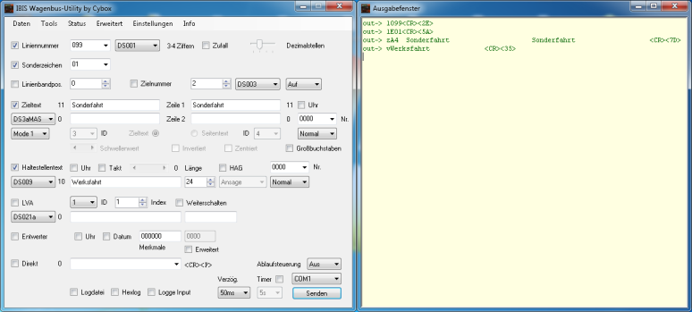

Das IBIS Wagenbus-Utility ist eine Windows-Software zum Erzeugen und Versenden von IBIS-Datensätzen über die serielle Schnittstelle am PC.
Mit einem geeigneten Schnittstellenwandler können so IBIS-Geräte (Slaves) direkt angesteuert werden.

Systemvoraussetzungen: PC mit Windows XP und .NET-Framework 3.5 Runtime, Vista oder Windows 7.
Download Version 1.87, 01.09.2013 (inkl. Dokumentation, auch einzeln erhältlich als PDF, Deutsch), das ist neu
Sprache umschaltbar zwischen Englisch, Deutsch und Niederländisch.
Kommandozeilenprogramm IBISserial (mit Beispielen).
Das Programm ist Freeware
Ich hafte nicht für Schäden die durch den Einsatz dieser Software entstehen.
Letzte Änderung 01.09.2013 - Alle Angaben ohne Gewähr, (c) 2010 - 2013 Stephan Schütt